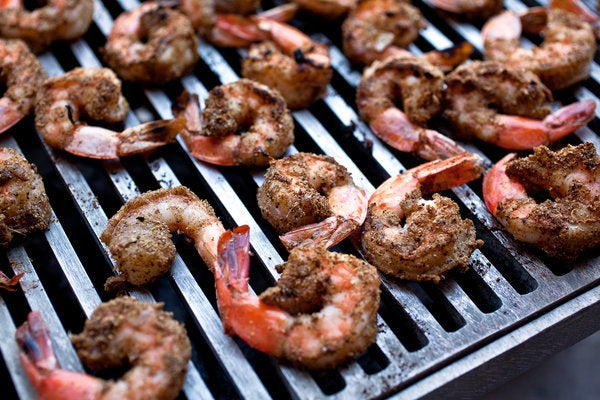

Spicy Grilled Shrimp

Description
This grilled shrimp recipe is fast and easy to prepare and destined to be the hit of any barbeque. And, weather not permitting, the shrimp cook up great under the broiler, too.
Ingredients
- Seasonings: This spicy grilled shrimp recipe is flavored with garlic, coarse salt, paprika, and cayenne pepper.
- Oil: Olive oil locks in the moisture and gives the seasonings something to stick to.
- Lemon: You’ll need lemon juice for flavor and lemon wedges for the garnish.
- Shrimp: Buy your shrimp pre-peeled and deveined or do it yourself at home.
Steps
- Make a paste with the garlic, oil, seasonings, and lemon juice.
- Toss the shrimp in the garlic paste until evenly coated.
- Grill the shrimp, then garnish with lemon wedges before serving.